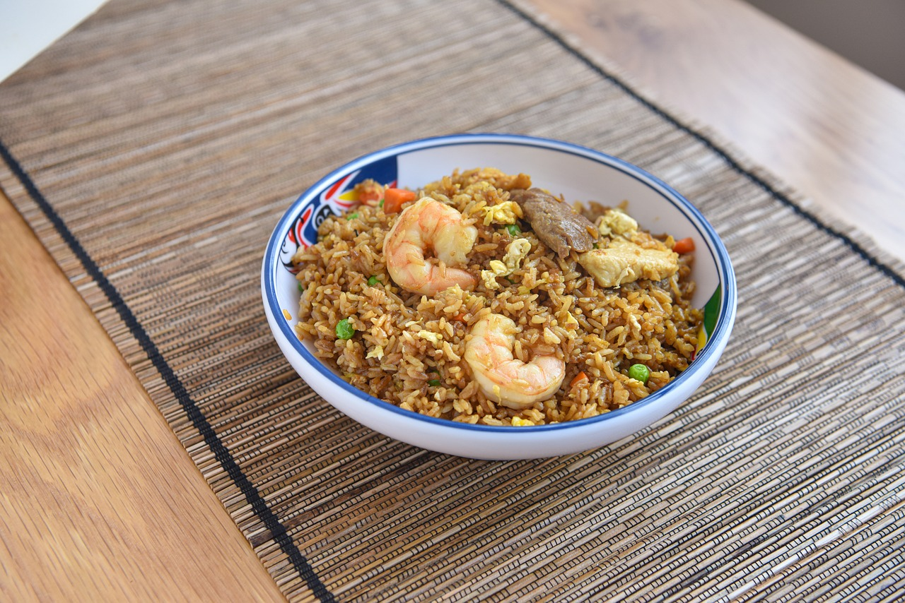

"Nasi Goreng 53" – tempat di mana kelezatan nasi goreng autentik bertemu dengan cita rasa yang tak
terlupakan. Didirikan
dengan semangat untuk menghadirkan masakan terbaik kepada Anda, "Nasi Goreng 53" menawarkan berbagai
pilihan nasi goreng
yang dibuat dengan bahan-bahan segar dan rempah pilihan. Kami berkomitmen untuk menyajikan hidangan
yang tidak hanya
lezat tetapi juga menghangatkan hati setiap pelanggan. Temukan pengalaman kuliner yang unik dan
nikmati setiap suapan
nasi goreng khas kami yang telah menjadi favorit banyak orang. Terima kasih telah memilih "Nasi
Goreng 53" sebagai
destinasi kuliner Anda.
PRODUK
 Nikmati cita rasa otentik Nasi Goreng 53 yang menggugah selera. Dibuat dengan resep turun-temurun
dan bahan-bahan
pilihan berkualitas, setiap porsi nasi goreng kami menghadirkan kelezatan yang tak tertandingi.
Dengan bumbu khas yang
kaya rempah dan aroma yang menggoda, Nasi Goreng 53 siap menjadi hidangan favorit Anda setiap saat.
Cocok dinikmati
bersama keluarga dan teman-teman, sajian kami selalu dihidangkan segar dan penuh rasa.
Nikmati cita rasa otentik Nasi Goreng 53 yang menggugah selera. Dibuat dengan resep turun-temurun
dan bahan-bahan
pilihan berkualitas, setiap porsi nasi goreng kami menghadirkan kelezatan yang tak tertandingi.
Dengan bumbu khas yang
kaya rempah dan aroma yang menggoda, Nasi Goreng 53 siap menjadi hidangan favorit Anda setiap saat.
Cocok dinikmati
bersama keluarga dan teman-teman, sajian kami selalu dihidangkan segar dan penuh rasa.
| LIST PRODUK |
| NAMA |
HARGA |
| Nasi Goreng Biasa
|
Rp 20.000 |
| Nasi Goreng Mawut |
Rp. 25.000 |
| Nasi Goreng Ati Ampela |
Rp 25.000 |
Cara Pemesanan

Bagi anda berminat untuk menyicipi nikmatnya masakan Nasi Goreng 53 bisa mengklik link ini: KLIK atau bisa ke instagram
@Nasigoreng_53
Dokumentasi

Nasi Goreng 53 adalah sajian istimewa yang memadukan cita rasa autentik dengan kualitas bahan
terbaik. Dibuat dengan
resep rahasia yang telah diwariskan dari generasi ke generasi, Nasi Goreng 53 menawarkan
pengalaman kuliner yang tak
terlupakan. Setiap porsi nasi goreng kami dimasak dengan sempurna, diperkaya dengan bumbu
pilihan, dan disajikan dengan
sentuhan tradisional yang khas. Kami berkomitmen untuk selalu menyajikan nasi goreng terbaik
yang akan memanjakan lidah
Anda di setiap suapan. Temukan kenikmatan sesungguhnya dalam seporsi Nasi Goreng 53, dan biarkan
rasa yang berbicara.
BAHAN PRODUKSI
Di "Nasi Goreng 53", kami hanya menggunakan bahan baku berkualitas tinggi yang dipilih dengan
cermat untuk memastikan
setiap porsi nasi goreng yang kami sajikan memiliki cita rasa terbaik. Beras premium kami
dipilih untuk menghasilkan
tekstur nasi yang pulen dan lezat. Kami juga menggunakan sayuran segar yang dipilih langsung
dari pasar lokal setiap
hari untuk memberikan kesegaran dalam setiap gigitan. Bumbu-bumbu pilihan yang kami gunakan
diracik secara khusus untuk
menciptakan rasa nasi goreng yang autentik dan nikmat. Selain itu, berbagai pilihan protein
seperti ayam, udang, dan
daging sapi yang kami gunakan dijamin segar dan berkualitas tinggi, sehingga Anda dapat
menikmati hidangan yang tidak
hanya lezat tetapi juga bergizi.